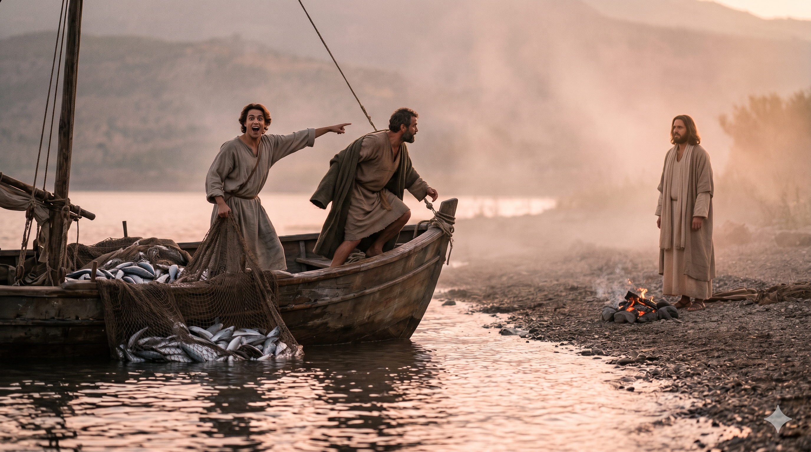
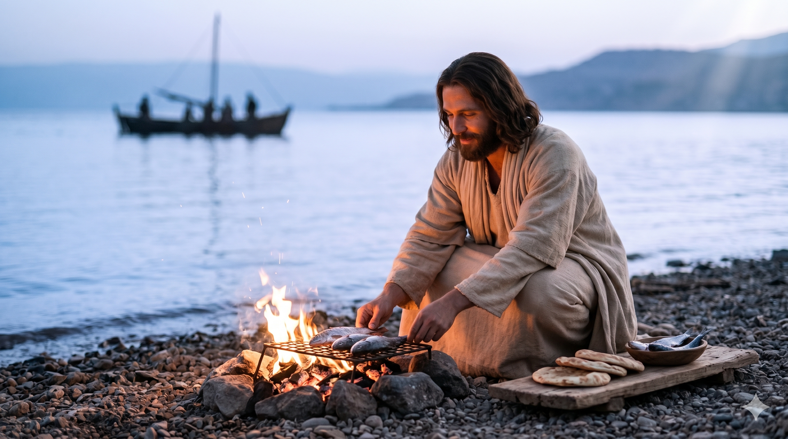

디베랴 호숫가 이른 새벽, 배 위에서 해변의 예수를 먼저 알아보고 외치는 요한, 그리고 물속으로 뛰어드는 베드로
날이 새어갈 때에 예수께서 바닷가에 서셨으나 제자들이 예수이신 줄 알지 못하더라 예수께서 이르시되 얘들아 너희에게 고기가 있느냐 대답하되 없나이다 이르시되 그물을 배 오른편에 던지라 그리하면 잡으리라 하시니 이에 던졌더니 고기가 많아 그물을 들 수 없더라 예수께서 사랑하시는 그 제자가 베드로에게 이르되 주시라 하니 — 요한복음 21:4–7
부활하신 예수님은 디베랴(갈릴리) 호수 가에 세 번째로 제자들에게 나타나셨습니다(요 21:14). 베드로를 비롯한 일곱 제자들이 밤새 고기를 잡으러 나갔지만 아무것도 잡지 못했습니다 — 몇 년 전 첫 만남의 반복입니다(눅 5장). 새벽이 밝아올 무렵, 해변에 한 분이 나타나셨습니다. "얘들아 너희에게 고기가 있느냐." 익숙한 음성이었으나 알아보지 못했습니다. "그물을 배 오른편에 던지라." 큰 고기 153마리로 그물이 터질 듯 찼을 때, 요한의 눈이 가장 먼저 열렸습니다. 그는 얼굴을 선명하게 볼 필요가 없었습니다. 패턴을 알아보았습니다 — 풍성함, 타이밍, 음성. "주시라!" 요한복음은 줄곧 요한을 "예수께서 사랑하시는 그 제자"로 표현합니다. 이것은 우연이 아닙니다 — 사랑이 눈을 날카롭게 합니다.
요한은 알아보았고, 베드로는 행동했습니다. 요한이 "주시라" 하는 순간, 베드로는 바다에 뛰어들어 헤엄쳐 해변으로 갔습니다. 이 두 제자는 아름답게 서로를 보완합니다 — 보는 사람과 뛰어드는 사람. 해변에 도착하자 예수님은 이미 숯불에 생선과 떡을 준비해 두고 계셨습니다. "와서 조반을 먹으라." 부활하신 주님은 신학 강의가 아니라 식사로 그들을 맞이하셨습니다. 빈 그물을 채워주시는 분이 밥상도 차려 두십니다. 실패의 밤은 넘치는 은혜의 아침으로 끝났습니다.

새벽 해변에서 숯불을 피워 놓고 제자들을 기다리시는 예수님 — 물고기와 떡을 준비하신 그분의 손길
요한이 예수를 먼저 알아본 것은 우연이 아닙니다. 그는 다른 어떤 제자보다 예수 곁에 가까이 있었고, 예수의 마음을 깊이 들여다봤습니다. 사랑은 알아보는 능력을 키웁니다. 우리가 주님과 깊은 관계를 맺을수록, 일상의 작은 순간에서도 그분의 손길과 음성을 먼저 알아보게 됩니다. 밤새 수고했지만 아무것도 잡지 못한 새벽처럼, 지치고 실망스러운 순간에도 그분은 해변에 서 계십니다. 그분을 알아보는 눈이 있습니까?
예수님은 그들의 실패의 자리에 나타나셨습니다 — 긴 밤 끝에 빈 그물. 성공한 후에 나타나신 것이 아닙니다. 그들의 빈 자리에 오셨습니다. 그리고 그물만 채워주신 것이 아니라, 식사를 준비해 두셨습니다. "와서 조반을 먹으라"(요 21:12)고 부르시는 그 음성은 오늘도 우리에게 향합니다. 당신이 지쳐 있을 때, 그분은 이미 당신을 위해 무언가를 준비해 두셨습니다. 먼저 그분께 나아가십시오.
요한의 두 글자 "주시라!"는 오래 사랑한 사람의 눈에서 나왔습니다.
사랑하면 알아봅니다. 멀리서도, 새벽 안개 속에서도.
오늘 당신의 삶 어느 곳에 그분이 서 계십니까?
사랑의 눈으로 바라보십시오.